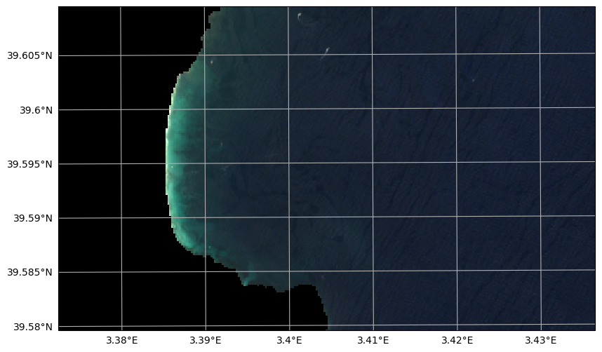
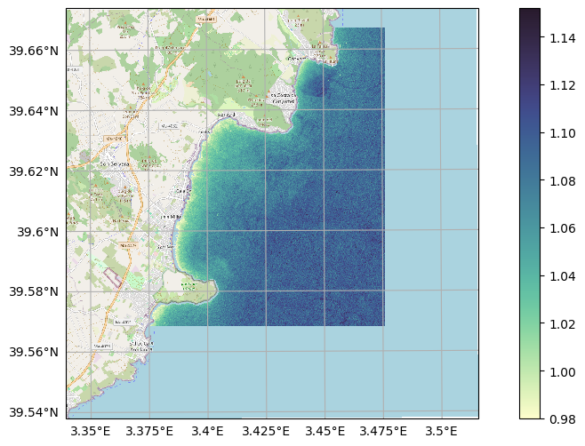
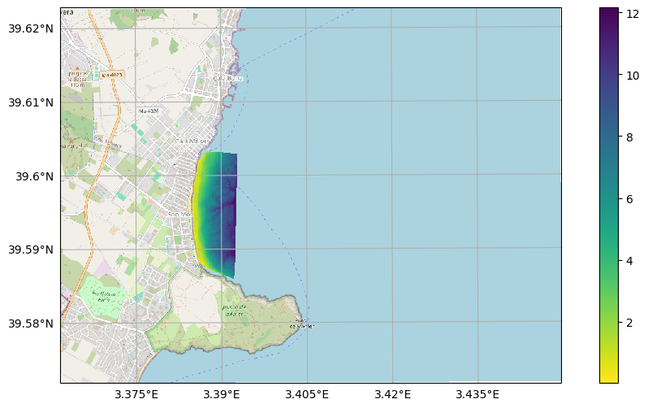
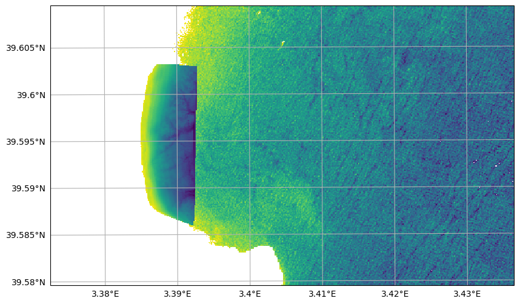
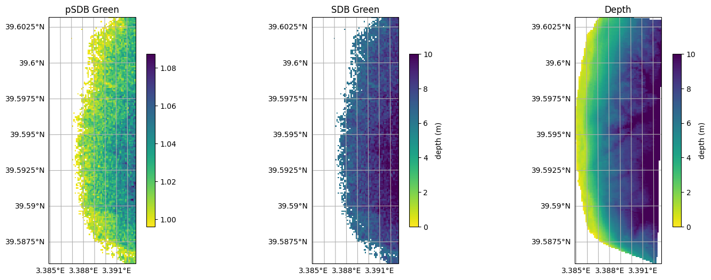
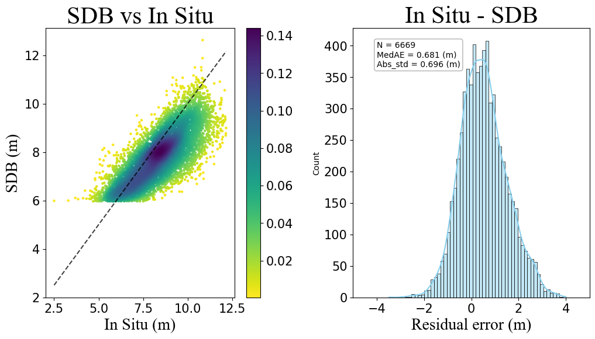
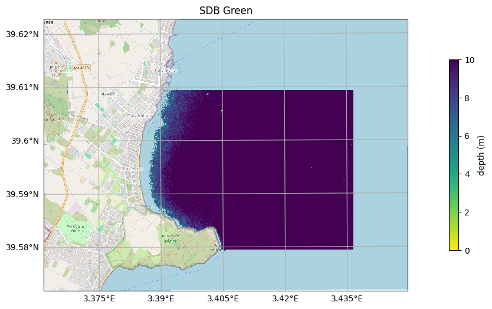

Satellite Derived Bathymetry - Stumpf Method#
Imports#
[1]:
import matplotlib.pyplot as plt
import geopandas as gpd
import numpy as np
import rasterio
import sys
sys.path.append(r'C:\Users\sergi\Documents\repos\geopy\geopy')
import reader
import plot
from bathymetry.models import stumpf_pseudomodel, LinearModel
from bathymetry.metrics import ValidationSummary
from bathymetry.plot import CalibrationPlot, ValidationPlot
from masks import is_valid, is_in_range
from preprocessing.outliers import IQR
from enums import SENTINEL2_BANDS
[2]:
import warnings
warnings.filterwarnings("ignore")
Load Satellite Image#
[3]:
satellite = reader.open(r'D:\S2_2018_09_05.tif')
satellite.rename({'B2' : 'Blue', 'B3' : 'Green', 'B4' : 'Red'})
[3]:
<xarray.Dataset> Size: 2MB
Dimensions: (y: 332, x: 550)
Coordinates:
* y (y) float64 3kB 4.384e+06 4.384e+06 ... 4.381e+06 4.381e+06
* x (x) float64 4kB 5.32e+05 5.32e+05 ... 5.375e+05 5.375e+05
projection int64 8B 0
Data variables:
Blue (y, x) float32 730kB -inf -inf -inf ... 0.03963 0.03848 0.03656
Green (y, x) float32 730kB -inf -inf -inf ... 0.02611 0.02029 0.0232
Red (y, x) float32 730kB -inf -inf -inf ... 0.01689 0.01455 0.01549
Attributes:
_FillValue_band_1: -inf
_FillValue_band_2: -inf
_FillValue_band_3: -inf
tiff_system-index: 0
tiff_AREA_OR_POINT: Area
band_1_name: B2
band_2_name: B3
band_3_name: B4
grid_mapping: projection[4]:
fig, ax = plot.get_geofigure(satellite, 1, 1)
plot.plot_rgb(satellite, 'Red', 'Green', 'Blue', ax = ax, brightness = 5)
plot.add_gridlines(ax)
[4]:
(<GeoAxes: >, <cartopy.mpl.gridliner.Gridliner at 0x26ffa6cee10>)

Pseudomodel Green#
[5]:
P_SDB_GREEN = 'pSDB Green'
satellite.add_band(P_SDB_GREEN, IQR( stumpf_pseudomodel(satellite.select('Blue'), satellite.select('Green')) ))
fig, ax = plot.get_geofigure(satellite, 1, 1)
ax, mappable = plot.plot_band(satellite, P_SDB_GREEN, ax = ax, cmap = 'viridis_r')
fig.colorbar(mappable, shrink = 0.5)
plot.add_gridlines(ax)
[5]:
(<GeoAxes: >, <cartopy.mpl.gridliner.Gridliner at 0x27000ecd110>)

Load In-Situ Depths#
[6]:
DEPTH = 'Depth'
in_situ = reader.open(r"D:\CallaMillor.tif")
in_situ.rename({'Band 1' : DEPTH})
in_situ.mask(in_situ.select(DEPTH) < 0) ## Positive values are land so they are masked
in_situ.add_band(DEPTH, abs(in_situ.select(DEPTH)) ) ## For model calibration we need depths as positive values
in_situ.dropna()
fig, ax = plot.get_geofigure(in_situ, 1, 1)
plot.add_basemap(ax, 3.372645, 39.579722, 3.436343, 39.60927, in_situ.crs)
ax, mappable = plot.plot_band(in_situ, DEPTH, ax = ax, cmap = 'viridis_r')
fig.colorbar(mappable)
plot.add_gridlines(ax)
[6]:
(<GeoAxes: >, <cartopy.mpl.gridliner.Gridliner at 0x27000f60d90>)

In-situ over Pseudomodel#
[7]:
fig, ax = plot.get_geofigure(satellite, 1, 1)
plot.plot_band(satellite, P_SDB_GREEN, ax, cmap = 'viridis_r')
plot.plot_band(in_situ, DEPTH, ax = ax, cmap = 'viridis_r')
plot.add_gridlines(ax)
[7]:
(<GeoAxes: >, <cartopy.mpl.gridliner.Gridliner at 0x270056a34d0>)

Clip satellite for faster processing#
[8]:
satellite.clip([in_situ.bbox])
in_situ.align(satellite)
[8]:
<xarray.Dataset> Size: 53kB
Dimensions: (y: 191, x: 67)
Coordinates:
* y (y) float64 2kB 4.384e+06 4.384e+06 ... 4.382e+06 4.382e+06
* x (x) float64 536B 5.331e+05 5.331e+05 ... 5.337e+05 5.337e+05
projection int64 8B 0
Data variables:
Depth (y, x) float32 51kB nan nan nan nan nan ... nan nan nan nan
Attributes:
tiff_AREA_OR_POINT: Area
grid_mapping: projection[9]:
fig, axs = plot.get_geofigure(satellite, 1, 2)
plot.add_basemap(axs[0], 3.372645, 39.579722, 3.436343, 39.60927, satellite.crs)
plot.plot_band(satellite, P_SDB_GREEN, axs[0], cmap = 'viridis_r')
plot.add_basemap(axs[1], 3.372645, 39.579722, 3.436343, 39.60927, in_situ.crs)
_, mappable = plot.plot_band(in_situ, DEPTH, ax = axs[1], cmap = 'viridis_r')
axs[0].set_title('pSDB Green')
axs[1].set_title('In-Situ Depth')
plot.add_gridlines(axs[0])
plot.add_gridlines(axs[1])
[9]:
(<GeoAxes: title={'center': 'In-Situ Depth'}>,
<cartopy.mpl.gridliner.Gridliner at 0x27005a1f890>)
Calibration#
Select random depths#
arginterval_choice returns a list of indexes. the band is transformed to 1D internaly, so we must transform our bands to 1D when masking.
[10]:
selection = in_situ.arginterval_choice(band = DEPTH, size = 3, intervals = range(5, 10))
Extract depths and pseudomodel as 1D-arrays#
[11]:
depths = in_situ.select(DEPTH).ravel()
p_green = satellite.select(P_SDB_GREEN).ravel()
Fit model#
[12]:
to_cal_depths = depths[selection]
to_cal_p_greens = p_green[selection]
no_nans = is_valid(to_cal_depths) & is_valid(to_cal_p_greens)
calibration = LinearModel().fit(to_cal_p_greens[no_nans], to_cal_depths[no_nans])
print(f'N: {len(to_cal_depths[no_nans])}, Calibration: {calibration}')
N: 9, Calibration: R: 0.6253 | y = 88.912x-82.676
Plot model#
[13]:
fig, ax = plt.subplots(1, 1, figsize = (6, 6))
cal_plot = CalibrationPlot(legend_font_size = 15)
cal_plot.add_calibration_scatter(calibration, to_cal_p_greens[no_nans], to_cal_depths[no_nans], ax = ax)
cal_plot.add_labels(ax, title = f'{P_SDB_GREEN} vs {DEPTH}', xlabel = P_SDB_GREEN, ylabel = DEPTH)
cal_plot.add_legend(ax)
[13]:
<Axes: title={'center': 'pSDB Green vs Depth'}, xlabel='pSDB Green', ylabel='Depth'>

SDB Generation#
[14]:
SDB_GREEN = 'SDB Green'
satellite.add_band(SDB_GREEN, calibration.predict(satellite.select(P_SDB_GREEN)))
fig, axs = plot.get_geofigure(satellite, 1, 3, figsize = (18, 6))
axs[0], mappable = plot.plot_band(satellite, P_SDB_GREEN, axs[0], cmap = 'viridis_r')
fig.colorbar(mappable, shrink = 0.7)
plot.add_gridlines(axs[0])
axs[0].set_title(P_SDB_GREEN)
axs[1], mappable = plot.plot_band(satellite, SDB_GREEN, axs[1], cmap = 'viridis_r', vmin = 0, vmax = 10)
fig.colorbar(mappable, shrink = 0.7, label = 'depth (m)')
plot.add_gridlines(axs[1])
axs[1].set_title(SDB_GREEN)
axs[2], mappable = plot.plot_band(in_situ, DEPTH, axs[2], cmap = 'viridis_r', vmin = 0, vmax = 10)
fig.colorbar(mappable, shrink = 0.7, label = 'depth (m)')
plot.add_gridlines(axs[2])
axs[2].set_title(DEPTH)
[14]:
Text(0.5, 1.0, 'Depth')

Validation#
Indexes of values to compare#
[15]:
validation_indexes = ~np.isin(np.arange(in_situ.select(DEPTH).size), selection)
validation_indexes
[15]:
array([ True, True, True, ..., True, True, True], shape=(12797,))
Metrics#
[16]:
depths = in_situ.select(DEPTH).ravel()[validation_indexes]
green = satellite.select(SDB_GREEN).ravel()[validation_indexes]
no_nans = is_valid(depths) & is_valid(green)
validation = ValidationSummary(in_situ = depths[no_nans], model = green[no_nans])
validation
[16]:
N: 6671 | MSD: -0.1886 | MedAE: 0.6449 | Abs_std: 0.63065
Plot#
[17]:
fig, axs = plt.subplots(1, 2, figsize = (12, 6))
val_plot = ValidationPlot(legend_font_size = 10)
val_plot.add_densed_scatter(validation, axs[0])
val_plot.add_residuals(validation, axs[1], metrics = ['MedAE', 'Abs_std'])
plt.subplots_adjust(wspace = 0.3)

Bathymetry#
[18]:
satellite = reader.open(r'D:\S2_2018_09_05.tif')
satellite.rename({'B2' : 'Blue', 'B3' : 'Green', 'B4' : 'Red'})
satellite.add_band(P_SDB_GREEN, IQR( stumpf_pseudomodel(satellite.select('Blue'), satellite.select('Green')) ))
satellite.add_band(SDB_GREEN, calibration.predict(satellite.select(P_SDB_GREEN)))
fig, ax = plot.get_geofigure(satellite, 1, 1, figsize = (18, 6))
plot.add_basemap(ax, 3.372645, 39.579722, 3.436343, 39.60927, satellite.crs)
ax, mappable = plot.plot_band(satellite, SDB_GREEN, ax, cmap = 'viridis_r', vmin = 0, vmax = 10)
fig.colorbar(mappable, shrink = 0.7, label = 'depth (m)')
plot.add_gridlines(ax)
ax.set_title(SDB_GREEN)
[18]:
Text(0.5, 1.0, 'SDB Green')
